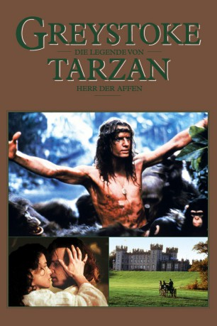
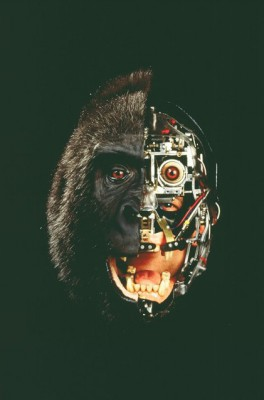

#5820 Greystoke - Herr der Affen (Die Legende von Tarzan)
Alternativ: Greystoke: The Legend of Tarzan, Lord of the Apes
Auszeichnungen: für 3 Oscars nominiert 1 BAFTA-Awards gewonnen
 
 IMDB-Wertung: 6.3 / 10
IMDB-Wertung: 6.3 / 10  Metascore: 0
Metascore: 0 
Im Jahr 1886 kommen Lord und Lady Greystoke in Afrika ums Leben. Ihr kleiner Sohn wird von Affen aufgezogen. Jahre später spürt eine Expedition den inzwischen erwachsenen Greystoke auf und bringt ihn zurück nach England. Doch der "Herr der Affen" kommt in der Zivilisation nicht zurecht.
Jahr: 1984
Dauer: 137 Minuten
FSK: 12
Land: England Studio: Warner Home VideoTonspuren: DTS - ,
Untertitel: Deutsch, Englisch,
Auflösung: 720p (1280x536) Größe: 7096 MB
Genre: Drama, Abenteuer
Regisseur: Hugh Hudson
Drehbuch: Taika Waititi
Soundtrack:
Darsteller:
 Ralph Richardson als The Sixth Earl of Greystoke
Ralph Richardson als The Sixth Earl of Greystoke Ian Holm als Capitaine Phillippe D'Arnot
Ian Holm als Capitaine Phillippe D'Arnot James Fox als Lord Charles Esker
James Fox als Lord Charles Esker Christopher Lambert als John Clayton / Tarzan, Lord of the Apes
Christopher Lambert als John Clayton / Tarzan, Lord of the Apes Andie MacDowell als Miss Jane Porter
Andie MacDowell als Miss Jane Porter- Cheryl Campbell als Lady Alice Clayton
- Ian Charleson als Jeffson Brown
 Nigel Davenport als Major Jack Downing
Nigel Davenport als Major Jack Downing Nicholas Farrell als Sir Hugh Belcher
Nicholas Farrell als Sir Hugh Belcher Richard Griffiths als Captain Billings
Richard Griffiths als Captain Billings David Suchet als Buller
David Suchet als Buller Paul Brooke als The Rev. Stimson
Paul Brooke als The Rev. Stimson-  Peter Elliott als Silverbeard, Primate Father
- John Alexander als White Eyes, Primate Leader
 Mak Wilson als Figs, Tarzan's Follower
Mak Wilson als Figs, Tarzan's Follower Deep Roy als Primate Sequences
Deep Roy als Primate Sequences Kiran Shah als Primate Sequences
Kiran Shah als Primate Sequences Derek Lyons als Footman , uncredited
Derek Lyons als Footman , uncredited- Johnny Melville als Mother , uncredited
- Harriet Thorpe als Iris , uncredited
- Paul Geoffrey als Lord John 'Jack' Clayton
- Hilton McRae als Willy
- Ravinder als Dean
- John Wells als Sir Evelyn Blount
- Eric Langlois als Tarzan aged 12
- Danny Potts als Tarzan aged 5
- Peter Kyriakou als Tarzan aged one
- Tali McGregor als Infant Tarzan
- Tristram Jellinek als Chalky White
- Roddy Maude-Roxby als Olivestone
- Ailsa Berk als Kala, Primate Mother
- Christopher Beck als Droopy Ears, Tarzan's Childhood Friend
- Rona Brown als Primate Sequences
- Georgia Clarke als Primate Sequences
- Tessa Crockett als Primate Sequences
- Frances D'Arcy als Primate Sequences
- David Forman als Primate Sequences
- Toh Koksum als Primate Sequences
- Eugene Little als Primate Sequences
- Tina Maskell als Primate Sequences
- Douglas Mann als Primate Sequences
- Rory Mitchell als Primate Sequences
- Martin Pallot als Primate Sequences
- Martin Scully als Primate Sequences
 Philip Tan als Primate Sequences
Philip Tan als Primate Sequences- George Antoni als Primate Sequences
- Emile Abossolo M'bo als Primate , uncredited
- Bridget Biagi als Primate , uncredited
- Colin Charles als Olly , uncredited
- Elaine Collins als Ruby , uncredited
Datei: X:\1984\Greystoke - Herr der Affen (Die Legende von Tarzan) (1984, FSK12, 1280x536).mkv seit 24.03.2017
Festplatte: HD 1980-1986
 Es gibt insgesamt 46 Filme in der Gruppe '1984'
Es gibt insgesamt 46 Filme in der Gruppe '1984'